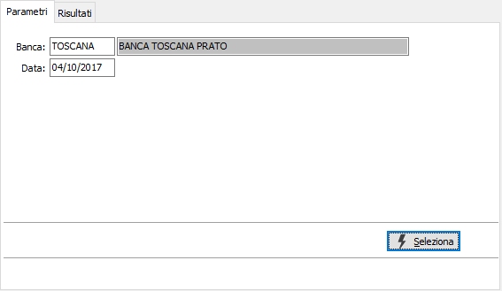
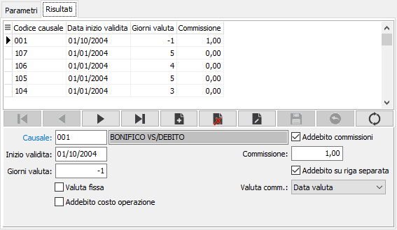

Valute
La tabella consente di memorizzare, per banca e data assegnazione valuta, le condizioni per valute e commissioni da applicare ad ogni causale associata alla banca stessa. Sulla pagina dei parametri è necessario specificare la banca e la data con cui selezionare i dati da modificare o inserire.

CODICE BANCA: identifica il codice banca per cui si vogliono inserire o modificare le valute. Sul campo sono attive le funzioni di ricerca sulla tabella stessa.
DATA: definisce la data, tramite cui ricercare le valute per la banca inserita. Saranno disponibili per la manutenzione solo le valute la cui data di validità sia inferiore o uguale al limite inserito.
Premendo il pulsante Selezione si accede alla pagina risultati dove sarà possibile inserire nuove valute, modificare o cancellare valute esistenti oppure effettuare la stampa di quanto visualizzato. Al termine delle operazioni sarà necessario confermare con il pulsante Salva della toolbar (tasto F10) oppure annullarle con il pulsante Annulla della toolbar (ESC).

CAUSALE: indicare la causale associata alla banca per cui si deve specificare la valuta. Sul campo sono attive le funzioni di ricerca sulla tabella stessa.
INIZIO VALIDITÀ: data a decorrere dalla quale sarà attiva la valuta.
GIORNI VALUTA: numero di giorni di valuta da applicare alla data di registrazione.
VALUTA FISSA: definisce se il numero dei giorni indicati nel campo precedente è fisso (casella con segno di spunta) oppure se devono essere considerati nel conteggio della data di valuta anche i giorni festivi e prefestivi (casella vuota).
ADDEBITO COSTO OPERAZIONE: indica che l'operazione ha un costo e sarà conteggiata nel totale delle operazioni dello scalare interessi (casella con segno di spunta).
ADDEBITO COMMISSIONI: definisce se in fase di registrazione movimento devono essere addebitate le commissioni (casella con segno di spunta).
COMMISSIONE: importo delle commissioni eventualmente da addebitare.
ADDEBITO SU RIGA SEPARATA: indica se le commissioni devono presentare in stampa estratto conto un rigo separato da quello del movimento principale (casella con segno di spunta).
VALUTA COMMISSIONE: data valuta per le commissioni quando gestite su rigo separato: come data movimento o come data valuta movimento.